<div class="flex">
  <!-- Sidebar -->
  <div [ngClass]="{'hidden': !isSidebarOpen}" id="sidebar"
    class="fixed inset-y-0 left-0 z-20 w-48 bg-sidebar dark:bg-gray-900 border-r border-gray-200 dark:border-gray-700 shadow-lg lg:relative lg:block transition-transform transform lg:translate-x-0 h-100"
    style="height: 100vh;">
    <div class="flex items-center justify-between px-4 py-4 logo">
      <h2 class="text-xl font-semibold text-white dark:text-gray-300 justify-center">HRMS</h2>
      <button (click)="toggleSidebar()" class="text-gray-600 dark:text-gray-400 focus:outline-none lg:hidden">
        <i class="fas fa-times"></i>
      </button>
    </div>
    <div class="flex justify-center">
      <div class="rounded-full overflow-hidden" style="width: 120px; height: 120px;">
        
      </div>
    </div>
    <nav class="mt-4">
      <a href="#" class="font-semibold px-4 py-2 flex items-center cursor-pointer dark:hover:bg-gray-700">
        
        <span class="font-semibold text-white dark:text-gray-300">Home</span>
      </a>
      <a href="#" class="font-semibold px-4 py-2 flex items-center cursor-pointer dark:hover:bg-gray-700">
        
        <span class="font-semibold text-white dark:text-gray-300">Me</span>
      </a>
      <div class="relative group">
        <!-- Main Menu Item -->
        <p
          class="font-semibold px-4 py-2 flex items-center cursor-pointer hover:bg-[#9d7ac8] dark:hover:bg-gray-700">
          
          <span class="font-semibold text-white dark:text-gray-300">My Team</span>
          <!-- Arrow Icon -->
          <svg
            class="w-4 h-4 ml-auto text-white dark:text-gray-300 transform group-hover:rotate-180 transition-transform"
            xmlns="http://www.w3.org/2000/svg" viewBox="0 0 20 20" fill="currentColor">
            <path fill-rule="evenodd"
              d="M5.293 7.293a1 1 0 011.414 0L10 10.586l3.293-3.293a1 1 0 111.414 1.414l-4 4a1 1 0 01-1.414 0l-4-4a1 1 0 010-1.414z"
              clip-rule="evenodd" />
          </svg>
        </p>
        <!-- Submenu Items -->
        <div
          class="absolute left-0 mt-2 w-full bg-[#856fa8] text-white rounded-lg shadow-lg opacity-0 pointer-events-none group-hover:opacity-100 group-hover:pointer-events-auto transition-opacity duration-300" style="top:30px">
          <a href="#" class="block px-4 py-2 hover:bg-[#9d7ac8] dark:bg-gray-800 dark:hover:bg-gray-700">Submenu Item 1</a>
          <a href="#" class="block px-4 py-2 hover:bg-[#9d7ac8] dark:bg-gray-800 dark:hover:bg-gray-700">Submenu Item 2</a>
          <a href="#" class="block px-4 py-2 hover:bg-[#9d7ac8] dark:bg-gray-800 dark:hover:bg-gray-700">Submenu Item 3</a>
        </div>
      </div>


      <a href="#" class="font-semibold px-4 py-2 flex items-center cursor-pointer dark:hover:bg-gray-700">
        
        <span class="font-semibold text-white dark:text-gray-300">My Finances</span>
      </a>
      <a href="#" class="font-semibold px-4 py-2 flex items-center cursor-pointer dark:hover:bg-gray-700">
        
        <span class="font-semibold text-white dark:text-gray-300">Organization</span>
      </a>
      <a href="#" class="font-semibold px-4 py-2 flex items-center cursor-pointer dark:hover:bg-gray-700">
        
        <span class="font-semibold text-white dark:text-gray-300">Logout</span>
      </a>
    </nav>
  </div>

  <!-- Main Content -->
  <button (click)="toggleSidebar()" class="lg:hidden p-4 text-gray-600 dark:text-gray-400 focus:outline-none">
    <i class="fas fa-bars"></i>
  </button>
</div>